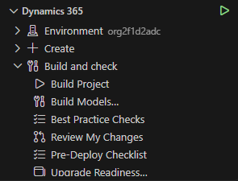
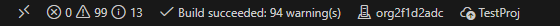

Build Project and Model¶
F&O Studio compiles your X++ models with the same Microsoft tools Visual Studio uses: LabelC for label files, xppc for X++ code and reportsc for SSRS reports. Build Project reports only the problems of the elements in your D365FO project; Build Model reports the problems of the whole model. Errors and warnings go to the Problems view at the right line of the element's code view. This is the equivalent of Visual Studio's Build and Dynamics 365 > Build models.

When to use it¶
- After you change code or metadata, to check that the model compiles before you test, debug or deploy.
- Before you deploy to a unified developer environment (UDE): deploy uploads the package as built on this machine, so an old build means old code on the environment.
- On a cloud-hosted or VHD environment, to get the new code into the local AOS (the build restarts the running AOS hosts).
- To refresh the cross-reference database so that Find All References includes your code.
Before you start¶
- An active environment configuration (see Select Environment or Connect to Environment). The build reads the compiler, the reference packages and the custom metadata folder from it.
- The model must be one of your own models, in the custom metadata folder of the configuration. Standard models cannot be built: the build stops with "Model '...' is not in your custom metadata folder (...). Only your own models can be built."
- For Build Project, an open D365FO project (
.rnrproj); see D365FO Projects. - Cloud-hosted or VHD environment: run VS Code as administrator, as you would run Visual Studio, because the build writes into PackagesLocalDirectory. See Cloud-Hosted and VHD Environments.
- If your X++ project references C# projects or assemblies, MSBuild must be available (Visual Studio, the Build Tools, or the .NET SDK). See Solution View and C# References.
How to use it¶
Build Project¶
- Open your D365FO project.
- Start the build in one of these ways:
- press
Ctrl+Shift+Bin an X++ code view or with a.rnrprojfile active; - click the project item in the status bar (see Status Bar);
- click Build Project (wrench icon) in the title bar of the D365FO Project view;
- click Build and check > Build Project in the Dynamics 365 view;
- run F&O Studio: Build Project from the command palette.
- A notification shows "Building project
…". Click Cancel on it to stop the compiler. - When the build succeeds, the status bar shows "Build succeeded" with the number of warnings for 10 seconds.
- When it fails, a message says "Build failed: N error(s), M warning(s) in
." with two buttons: - Show Problems opens the Problems view;
- Show Output opens the X++ Build output with the full compiler log.
If no project is open, Build Project builds a model instead (see below).

Build Model¶
- Run F&O Studio: Build Model from the command palette, click Build and check > Build Models… in the Dynamics 365 view, or use the build icon in the title bar of the Application Explorer view.
- With a project open, F&O Studio builds the project's model. Without a project, a picker titled Model to build lists the packages in your custom metadata folder; pick one.
- The progress, result message and Problems view work as for Build Project, but every diagnostic of the model is reported.
Project build versus model build¶
| Build Project | Build Model | |
|---|---|---|
| What xppc compiles | The whole package of the project's model | The whole package |
| What reaches the Problems view | Diagnostics of the project's elements (and fatal errors) | Every diagnostic of the package |
| Count in the result message | Errors and warnings of the project's elements | All errors and warnings |
| Success | Only when the whole package compiles without errors | Same |
xppc always compiles the whole package. A project build only filters what it reports. If an element outside your project has an error, Build Project fails even though the Problems view shows nothing for your project; run Build Model to see that error.
What you see in the X++ Build output¶
Every step writes the command line it runs and the tool's output to the X++ Build output channel, for example:
=== Build ContosoExtensions (10:42:13) ===
> LabelC.exe -metadata=... -output=...\ContosoExtensions\Resources -modelmodule=ContosoExtensions -names=ContosoLabels_en-US
> xppc.exe -metadata=... -compilermetadata=... -modelmodule=ContosoExtensions -output=...\ContosoExtensions\bin ...
Warning: dynamics://Class/ContosoOrderStatusHelper/Method/run(12,9): ...
Converted 1 PDB(s) to portable PDBs for debugging in VS Code.
=== ContosoExtensions (project items): BUILD SUCCEEDED - 0 error(s), 3 warning(s) ===
Save before build¶
By default, unsaved X++ code views are saved before the build starts, so the compiler sees your latest code
(xpp.build.saveBeforeBuild). Unsaved code would otherwise be compiled from the metadata on disk.
Build after every save¶
The setting xpp.codeIntelligence.diagnosticsOnSave (off by default, marked "Slow") runs Build Project after you
save X++ code, so semantic errors reach the Problems view without a manual build. It costs about 10 seconds per save.
Options and settings¶
| Setting | Default | Effect |
|---|---|---|
xpp.build.saveBeforeBuild |
true |
Save unsaved X++ code views before a build. |
xpp.build.crossReference |
true |
Pass -xref to xppc so the cross-reference database is updated and where-used includes your code. Only used when the configuration names a cross-reference server and database. |
xpp.build.runAppCheckerRules |
false |
Pass -RunAppcheckerRules to xppc. |
xpp.build.restartLocalAos |
true |
Cloud-hosted and VHD: restart the running AOS hosts after a successful build. Not used on UDEs. |
xpp.build.msbuildPath |
empty | MSBuild.exe for the C# projects and assemblies your X++ project references. Empty: Visual Studio's or the Build Tools' MSBuild, else the .NET SDK's (dotnet msbuild). |
xpp.codeIntelligence.diagnosticsOnSave |
false |
Build the project after each save of X++ code. |
See Settings Reference for all settings.
How it works¶
The build is implemented in src/build.ts
(XppBuilder.build). The commands are registered in
src/extension.ts. Every step runs on your machine;
nothing is sent to the environment.
1. Find the package¶
A model lives in a package (a folder in the custom metadata folder). The package can have a different name than the
model: F&O Studio looks for <package>\Descriptor\<model>.xml to find it. Build logs go to <package>\BuildLogs.
2. C# references¶
If the open project belongs to the package being built and the .rnrproj has project references, assembly references
or files marked Copy to Output Directory, F&O Studio runs MSBuild on the .rnrproj first, as Visual Studio does
(src/dotnetReferences.ts):
- Visual Studio's build tasks (imported through
$(BuildTasksDirectory)) are replaced by empty stand-ins, and a target that only resolves the references is added. - The referenced C# projects are built; their assemblies, dependencies, PDB and XML files, satellite assemblies and
Copy to Output Directory files are copied into
<package>\bin. - Finance and Operations' own assemblies (anything in PackagesLocalDirectory\bin, or named
Dynamics.AX.*) are never copied; the output says "reference it with Copy Local = False".
If this step fails, the build stops with "BUILD FAILED (the projects and assemblies the X++ project references)".
3. Labels (LabelC)¶
If any model of the package has label files, LabelC compiles them into <package>\Resources:
LabelC.exe -metadata=<custom metadata folder> -output=<package>\Resources -modelmodule=<package> -names=<Id_language,...>
The names carry their language suffix (for example ContosoLabels_en-US,ContosoLabels_de), as LabelC expects.
4. X++ (xppc)¶
xppc.exe -metadata=<custom metadata folder>
-compilermetadata=<RuntimePackagesDirectory, else FrameworkDirectory>
-modelmodule=<package>
-output=<package>\bin
-xmllog=<package>\BuildLogs\Dynamics.AX.<package>.xppc.xml
-log=<package>\BuildLogs\Dynamics.AX.<package>.xppc.log
-appBase=<PackagesLocalDirectory>\bin -refPath=<PackagesLocalDirectory>\bin
-referenceFolder=<each reference package path> -referenceFolder=<custom metadata folder>
[-xref -xrefSqlServer=<server> -xrefDbName=<database>]
[-RunAppcheckerRules]
A build counts as successful only when xppc exits with 0, the XML log has no error or fatal diagnostic, and
Dynamics.AX.<package>.dll was written by this build. Otherwise the result line says why, for example "(xppc exited
with an error)" or "(no assembly was produced)". The XML log is turned into Problems entries; see
Compiler Diagnostics.
5. Reports (reportsc)¶
After a successful X++ compile, the package's reports are compiled to <package>\Reports\*.rdl, which the AOS reads
at run time (src/reports/reportCompiler.ts):
reportsc.exe -metadata=<root> -modelmodule=<package> -name=<Report1,Report2,...> -output=<package>\Reports
-LabelsPath=<root> -log=...\Dynamics.AX.<package>.reportsc.log -xmllog=...\Dynamics.AX.<package>.reportsc.xml
- reportsc reads one metadata root, so standard and custom packages must sit side by side. On cloud-hosted and VHD
environments (one shared folder) that is the custom metadata folder itself. Otherwise F&O Studio keeps a folder of
junctions to every package under
%LOCALAPPDATA%\FOStudio\ReportMetadata\<configuration>. - Reports are always passed by name; without
-namereportsc would first delete every.rdlin the output folder. - Compiled
.rdlfiles of reports that are no longer in the package are removed. - Report errors make the build fail ("(report compilation)"). Packages without reports skip this step.
See Report Build.
6. Portable PDBs¶
xppc writes Windows PDBs; the VS Code debugger reads only portable PDBs. After a successful build, every Windows PDB in
<package>\bin is converted in place with Microsoft's Pdb2Pdb, which ships with the extension. A conversion problem
does not fail the build; it writes a warning to the output. See Debugger.
7. Cloud-hosted and VHD: restart the AOS¶
On cloud-hosted and VHD environments the AOS keeps running the old assemblies. After a successful build, as Visual
Studio does, F&O Studio restarts the hosts that are running: IIS Express (stopped and started with its own command line),
the AOS application pool in IIS (recycled) and the batch service (DynamicsAxBatch). Hosts that are not running are
left alone. If a debug session is attached, it is detached first; start debugging again once the AOS is back. Batch
tasks running at that moment are cut off. Turn this off with xpp.build.restartLocalAos.
UDEs run the code that was last deployed, so nothing restarts; deploy instead (see Deploy to Environment).
8. After the build¶
The result (model, success, errors, warnings, project or model scope, time) updates the project item in the status bar and the built-versus-deployed state used by Status Bar, Run Tests and the debugger.
Builds by Copilot¶
The agent tool xpp_build runs the same steps in the metadata server
(server/Ported/MetaModel/BuildService.cs,
C# references in server/Host/ProjectReferences.cs).
It accepts modelName, scope (model or project) and syncDatabase, and returns "BUILD SUCCEEDED" or "BUILD
FAILED" with up to 80 diagnostics. Differences from the commands:
- it does not pass
-RunAppcheckerRulesand always adds-xrefwhen the configuration names a cross-reference database; - it does not convert PDBs or restart the AOS;
- its result goes to the agent, not to the Problems view, and it does not update the status bar or the deploy state.
See Agent Tools: Build and Data.
Other places that build¶
- Build Tasks (
tasks.json). - Pre-Deploy Checklist builds the project first.
- Open Team Repository builds linked packages in dependency order.
- Run Snippet builds the project before it runs.
Limitations¶
- Only models in the custom metadata folder can be built.
- xppc always compiles the whole package, so a project build takes as long as a model build.
- Builds are one model at a time. There is no "build all models with dependencies" command; build models in dependency order yourself (or use Open Team Repository for linked packages).
- On a UDE, a build does not change what runs on the environment until you deploy.
Troubleshooting¶
| Symptom | Cause | Fix |
|---|---|---|
| "Model '...' is not in your custom metadata folder" | The model is a standard model or lives in another configuration. | Select the right environment, or create your own model. |
| "Build failed: 0 error(s)" after Build Project | An element outside the project has an error; the project build hides it. | Run Build Model to see all errors. |
| "BUILD FAILED (xppc exited with an error)" with no diagnostics | xppc crashed or could not start. | Open Show Output and read the xppc log in <package>\BuildLogs. |
| "(no assembly was produced)" | xppc wrote no new Dynamics.AX.<package>.dll, often because the file is locked. |
On cloud-hosted/VHD, check that VS Code runs as administrator and the AOS is not locking the file. |
| "Label compilation failed." | LabelC returned an error. | Read the LabelC output in X++ Build; check the label files of the model. |
| "BUILD FAILED (the projects and assemblies the X++ project references)" | MSBuild failed on a referenced C# project. | Read the MSBuild output; set xpp.build.msbuildPath if the .NET SDK's MSBuild cannot build the project. |
| "BUILD FAILED (report compilation)" | reportsc reported errors. | The errors are listed in X++ Build; see Report Build. |
| "Warning: ... was not converted to a portable PDB" | Pdb2Pdb could not convert a file. | The build still succeeded; the VS Code debugger cannot use that PDB. |
| "Warning: the AOS may still run the previous build until it is restarted." | One restart step failed (cloud-hosted/VHD). | Restart IIS or IIS Express and the batch service yourself. |
Related¶
- Compiler Diagnostics
- Build Tasks
- Best Practice Checks
- Deploy to Environment
- Status Bar
- Solution View and C# References
- Report Build
- Cloud-Hosted and VHD Environments
- Compared with Visual Studio
Source: Build-Project-and-Model on the wiki.